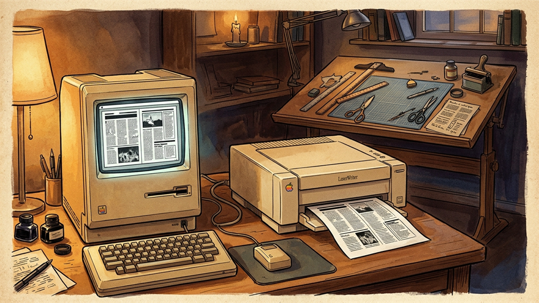

1984
PageMaker, when making a magazine moved to your desk
"We can make a magazine right at our desks, no print shop needed!"
From café menus to school newsletters, the age when anyone could make a printed thing began here.

Up through the early 1980s, making a magazine or a book was strictly professional territory.
To get your writing to look like real print, you either walked into a print shop where typesetters laid out metal type by hand, or you used industrial equipment that cost as much as a car.
A neighborhood café that wanted a menu, or a school club that wanted a newsletter, paid a designer real money — and then waited a week for the result.
When the Macintosh appeared in 1984, somebody at Aldus had a bold thought:
"You can lay out text and pictures right here on this little screen. And you can print exactly what you see on one of those new laser printers. So… why couldn't a person just make a magazine at home, without ever calling a print shop?"
That question became Aldus PageMaker, released in 1984. A designer would arrange text and photos on the Macintosh screen with a mouse, and the layer of paper that came out of the printer matched it exactly.
A magazine editor finished her first issue and was almost emotional about it:
"The work I used to send out to a print shop, I'm doing on my own desk now. The cost is one-tenth of what it was, and I see the result instantly."
A new word was coined for what was happening — "desktop publishing."
Every tool you reach for today when you need to whip up a café menu, a school event poster, or a small business card — InDesign, Canva, Figma, Adobe Express — descends from PageMaker.
The magic of "what I just made looks like real print" got placed into ordinary people's hands for the first time in 1984, and it's been spreading ever since.
PageMaker popularized WYSIWYG ("What You See Is What You Get") layout editing, where printed pages matched what was arranged on screen.
Separating content from visual layout influenced later web design tools and changed how magazines and newsletters were produced.